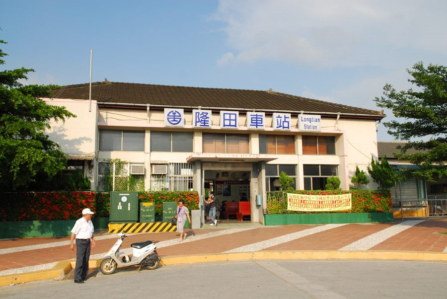

의왕역 입환 작업 중 50대 코레일 직원 열차에 깔려 숨져
경기 의왕역에서 화물열차 입환 작업을 하던 50대 코레일 직원이 열차에 깔려 숨졌다. 입환은 차량을 분리·연결해 선로를 옮기는 작업으로, 작업자가 선로 위에서 움직이는 열차와 근접해 일하는 공정이다.
이문창 기자 · 2026.09.05
橋한국

경기도 의왕역에서 입환 작업 중이던 50대 한국철도공사 직원이 열차에 깔려 숨지는 사고가 발생했다. 경찰과 소방 당국은 사고 경위를 조사하고 있다.
광고 문의 · 300×250입환(入換)은 화물열차의 화차를 떼어내거나 붙여 다른 선로로 이동시키는 작업이다. 작업자는 무전으로 기관사와 신호를 주고받으며 선로 위에서 이동하는 차량 옆을 따라 움직인다. 구조적으로 사람과 열차의 거리가 좁을 수밖에 없는 공정이다.
반복돼 온 유형
철도 현장 사망사고 가운데 입환·선로 보수 작업 중 사고는 반복적으로 발생해 온 유형이다. 열차가 저속으로 움직이더라도 수백 톤의 질량이 걸린 이상 접촉 즉시 치명적이다.
그간 대책으로는 2인 1조 작업, 무선 통신 이중화, 작업 구간 열차 진입 차단 장치 등이 제시돼 왔다. 이번 사고에서 이러한 절차가 어떻게 적용됐는지는 조사를 통해 확인될 부분이다.
의왕역이라는 장소
의왕역은 수도권 화물 물류의 중심 가운데 하나다. 인근 의왕내륙컨테이너기지는 부산항과 수도권을 잇는 철도 화물의 결절점 역할을 한다. 작업량이 많은 만큼 입환 빈도도 높다.
이 일대의 물류 종사자 가운데는 화인 출신 근로자도 적지 않다. 컨테이너 하역과 창고 작업은 야간 근무 비중이 높고, 언어 장벽이 있는 경우 안전 교육과 무전 소통에서 취약해질 수 있다. 사업장별 안전 수칙이 다국어로 제공되는지 점검할 필요가 있다는 지적이 나온다.
출처·참고 (사실 확인용 — 본문은 직접 재작성)
· 경향신문 2026-08-30
· 경향신문 2026-08-30